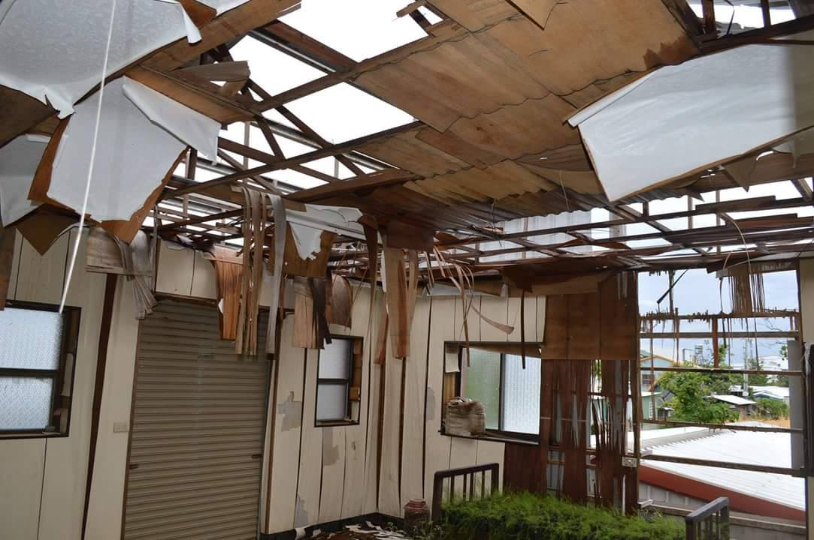

衡山行善團
修繕整理
身心障礙者，容易因行動不便無力打理居家環境，家屬負責長期照護也相當辛苦，往往需犧牲工作，無暇顧及家庭環境，而髒亂破損的環境設備，不僅使用不便，更充滿危險性，對身心健康無疑是雪上加霜。
衡山行善團於2014年5月1日正式成立，針對身心障礙弱勢家庭的需求，於家訪評估後出團，立刻改善案家生活品質，幫助他們走出生活中的困境，擁有一個安全舒適的避風港。
▶ 協助對象
協助清寒的身心障礙家庭（持有低收入戶/中低收入戶證明，或由其他社福單位轉介者）。
▶ 服務項目
居家環境整理、修繕，在服務前實地家訪評估案主需求。
▶ 流程
他們的故事
-

衡山行善團將在12月17日出團至台東，協助93歲的王阿公，王阿公年輕時隨軍隊到台灣後派往台東駐守，而後娶當地原住民為妻。一輩子保家衛國的阿公經歷多次的戰火，現因年紀老邁已經有一隻眼睛看不見而另一眼又弱視，但仍需照顧84歲的阿嬤，阿嬤因糖尿病而腳截肢，只能靠輪椅行動但反應慢，小兒子約35歲左右打零工，工作不順利。大兒子雖從小被人領養仍然常來探望倆老，對阿公阿嬤很孝順，不幸的是太太得癌症剛開完刀亦需照顧。 目前王阿公所居住的房屋是早期駐守台東時所蓋的，經歷了50多年的時間已經老舊不堪，加上尼伯特颱風將屋頂掀翻鐵皮牆面亦被破壞，阿公年紀大了已無力修護，多次風雨侵蝕導致2樓木隔房間腐壞，親子三人目前擠居住一樓，屋況老舊窗戶不齊，房間昏暗浴室廚房雜亂漏水。王阿公希望最熟悉的家可以擋風蔽雨，安全空間方便阿媽輪椅出入，平安度過即將到來的寒冬。 衡山行善團將協助屋頂修繕、天花板、浴廁與水電修繕、廚房清潔整理
-
衡山行善團將在12月10日出團至高雄旗山，協助一位60歲的廖伯伯。他罹患口腔癌正在治療中，平日須靠鼻胃管灌食。家境清寒的他，在生活及就醫方面，均由未婚的哥哥一手照料，廖伯伯因位需要長時間生活起居照顧及就醫協助，廖伯伯的哥哥也因而無法外出工作，全心在家照顧離癌的弟弟。目前全家僅靠廖伯伯其左眼失明的妻子的身障補助過生活，由於家中買不起營養補充品，也僅能以稀飯打成糜為廖伯伯做鼻胃管之灌食，長期下來也導致廖伯伯營養不良，讓化療後的健康情況雪上加霜，且沒有熱水器，天冷時以傳統燒柴方式供應熱水來洗澡。 行善團將協助廁所的修繕、加裝熱水器和抽油煙機、水電修繕、提供衡山愛心食物銀行的物資。
-
2016-10/22新北市三重區衡山行善團下午1：00在土城修繕。 感恩一日志工，衡山志工犧牲假日為蘇女士愛的協助， 蘇女士是精神疾病重度障礙者，靠低收補助生活，自理能力不足家中堆積雜物多，蟑螂橫行，蘇女士常被蟲咬，因為蘇女士長期服葯導致身體疲累無法妥善整理居住空間。 衡山行善團出團協助，把愛傳出。